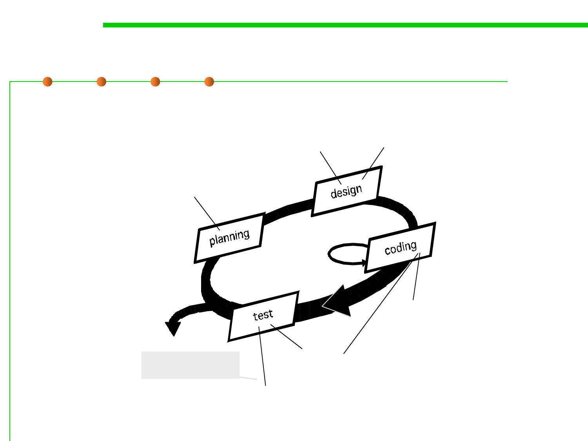

2.1 Software Lifecycle and Configuration Management
Agile development method：eXtreme Programming (XP)
Incremental user stories
user st ories
values
accept ance t est crit eria
it erat ion plan
simple design
CRC cards
Prototyping 原型
spike solut ions
prot ot ypes
Refactoring
Test-Driven Dev.
(TDD)测试驱动的开发
Continuous delivery
持续发布
Iteration refact oring
pair
programming
Pair programming
Release
sof t ware increment
project velocit y comput ed
unit t est
cont inuous int egrat ion
结对编程
accept ance t est ing
Build automation 自动构建
Continuous integration 持续集成